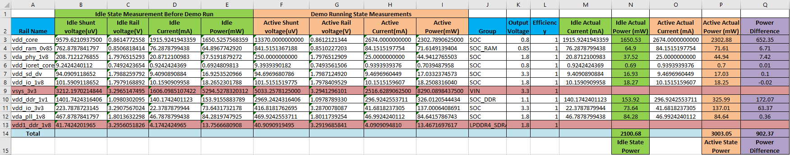

Power measurement is a critical step in evaluating the efficiency, thermal characteristics, and overall performance of embedded systems. The J722S EVM, equipped with an integrated XDS110 debug probe and TIVA automation firmware, provides a convenient and accurate way to measure power consumption across various rails during different operational states (idle, active, etc.). This guide provides a step-by-step process, from setup to data analysis, for measuring power on the J722S EVM using the XDS110 debug probe.
xdsdfu tool is installed with CCS. It is usually located in the CCS installation directory under /home/$USER/ti/ccs<ccs_version>/ccs/ccs_base/common/uscif/xds110/xdsdfu.xdsdfu. auto set dut <DUT type>: Initialize the device under test (DUT).auto measure power <samples> <delay>: Measure power consumption.<samples>: Number of samples to average (max 150).<delay>: Delay in milliseconds between samples. <soc_name> with the name of the system-on-chip (SoC) you are using (e.g., "j722s").<input_txt_file> with the path to your txt file containing the power data.<output_excel_file> with the desired path for the output Excel file.vsys_3v3 and vdd1_ddr_1v8 are ignored as we are only interested in SOC power rails.